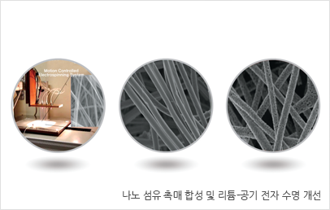
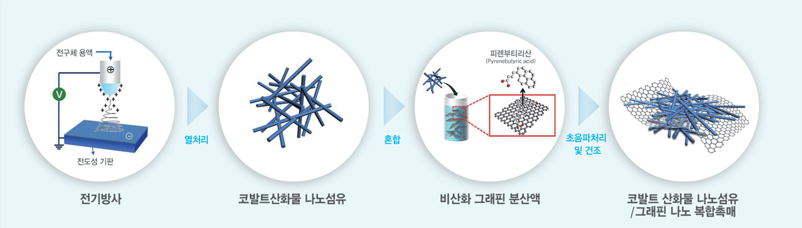
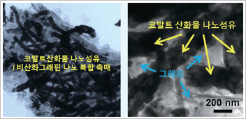
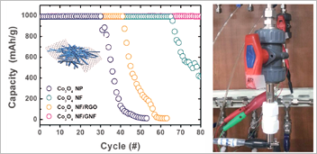

주제별 연구성과
주제별 연구성과
KAIST RESEARCH ACHIEVEMENTS
리튬-공기전지로
800km를 주행하다!
신소재공학과 김일두 ∙ 전석우
요약
석유고갈 및 이산화탄소 배출에 의한 지구온난화 문제를 해결하기 위한 방안으로 전기자동차와 같은 친환경 자동차를 대중화하려는 노력이 계속되고 있다. 2030년에는 "리튬-공기전지용 고성능 나노섬유-그래핀 복합 저가 촉매"를 이용한 전기자동차가 개발되어 서울-부산간 거리를 한번의 충전만으로 왕복할 수 있으며, 전기자동차 구입비용이 현저하게 낮아지게 되어 현재의 가솔린기반의 자동차가 점점 사라지고 친환경 전기자동차가 대중화된다. 친환경, 저가격, 고성능 전기자동차의 대중화로 인해 지구온난화문제가 완화되며 전 세계의 이상 기온 현상이 점점 자취를 감추게 된다.
연구내용

리튬-공기(Li-Air) 이차전지는 리튬과 가벼운 산소를 음극과 양극으로 사용하여 기존 리튬이차전지(그래파이트 음극-무거운 리튬전이금속산화물 양극) 보다 방전용량이 6배 이상 크며, 가솔린 연료와 유사한 높은 이론적 에너지밀도를 가지고 있어 전기자동차의 주행거리를 획기적으로 개선시킬 수 있는 차세대 전지로 큰 주목을 받고 있다.
방전시 리튬과 산소가 서로 만나 리튬산화물(Li2O2)이 형성되고 충전시 다시 리튬과 산소로 분해되는 과정이 완벽하게 이루어지지 못해 부도체인 리튬산화물이 탄소 전극에 지속적으로 쌓여, 장수명(Cycle) 특성 및 고율(High Rate) 특성이 나쁜 문제점을 안고 있다.이를 개선하기 위해서는 리튬산화물의 형성 및 분해반응을 보다 수월하게 하여 수명특성을 획기적으로 개선시킬 수 있는 고효율 촉매개발연구가 필수적이다.
연구에서는 촉매활성이 큰 1차원 코발트산화물(Co3O4) 나노섬유에 높은 전기전도도와 큰 비표면적을 가지고 있는 비산화 그래핀(Nonoxidized Graphene Nanoflakes, Nano lett., 12, 2871-2876, 2012, 전석우 교수 그룹 합성)을 결착시킴으로써 리튬-공기전지용 촉매 성능을 극대화 시켰다.(그림 2, 3) 나노섬유-그래핀 복합촉매를 리튬공기전지의 공기극에 포함시켜 구동시킬 경우 10,500mAh/g의 매우 높은 방전 용량과 기존 리튬이차전지 용량의 6배에 달하는 1000mAh/g 의 용량에서도 80 사이클 이상의 우수한 수명특성을 보여주었다. (그림 4) 저가격으로도 대량생산이 가능한 다공성 나노섬유촉매가 기존에 보고된 초미세 나노입자 촉매들에 비해 탁월한 리튬산화물(Li2O2) 분해 특성이 있다는 점을 본 연구를 통해 성공적으로 밝혔다.
 그림 2. 리튬공기 이차전지용 코발트산화물 나노섬유/그래핀 복합촉매 제조과정
 그림 3. 코발트산화물 나노섬유/그래핀 나노 복합촉매
 그림 4. 나노복합촉매로 구성된 리튬공기 이차전지
기대효과
고가의 백금이나 금 촉매를 이용하지 않고 가격이 저렴한 전이금속 산화물과 탄소계 그래핀 소재를 복합화한 촉매의 성공적인 합성 및 양산화 기술을 바탕으로 한번 충전으로 800km 이상 주행이 가능한 리튬-공기 이차전지의 실용화 가능성을 높였다. 전기방사 방법은 나노섬유 양산이 검증된 합성법으로 코발트산화물 뿐만아니라 다양한 촉매소재 합성을 위한 기본공정으로 적용이 가능하다.
연구지원
ㆍ미래창조과학부 글로벌 프론티어
ㆍ한국연구재단
연구실적
ㆍ백금/금 촉매를 대체할 수 있는 1/100 가격의 나노섬유 촉매 양산화 기술 및 원천 특허 확보
ㆍ나노섬유 응용기술 관련 국내외 등록 및 출원 70건 및 기술 이전 3건
ㆍ2020년 대한민국 산업을 빛낼 미래 100대 기술과 주역 "나노섬유 기반 전자재료" 분야 수상, 한국공학한림원 (2013.12)
ㆍMBC, YTN Science 등 국내언론보도
ㆍ국내 특허 등록, 국외 6개 국가 특허 출원 중
ㆍ2012 제2회 국제 전기방사 학회 대한민국 유치 및 학회장 (Conference Chair) 역임